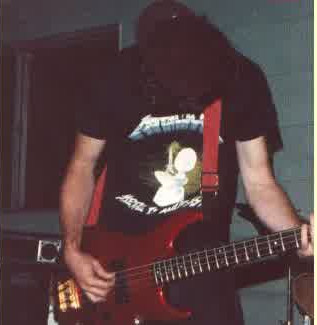
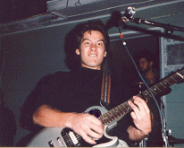
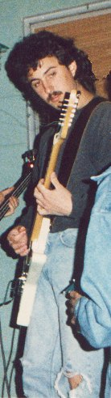
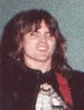
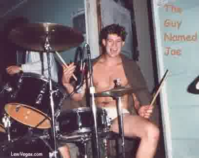

THE WOMB
Carbondale, Illinois • Late 1980s • Now in Nevada
In the beginning

My first instrument was the bass guitar; I give Gene Simmons (KISS) some credit for my choice. Also I wanted to do some jamming with my friend PJ, he played guitar, so if I learned the bass all we would need is a drummer for a complete band. We named our band OMNI. I was 13 years old and have been playing ever since!
Jim Felt was our first drummer, but OMNI has had quite a few drummers. Other bands I was in back then included Lixx, Rear Window, and couple others that I don't remember the name. PJ and I are still great friends and do some jamming whenever we get the chance, so OMNI is still alive and well!
Then I went to college, Southern Illinois University, I was in a bunch of bands there. Million $ Mike and I were in a band called Infinite Change, we call it Infinitely Lame (ha ha), anyway we played a couple gigs. Me, Mike, Johnny Z and sometimes Dave Dude would get together often to party and jam, but just for fun.
Soon after hooking up with a drummer, Joe, we gave ourselves a name and started playing any gig we could get. Being in that band was the closest I've ever come to being a rock star. Life was good. Here are comments from my bandmates about our experience in The Womb.
MIKE - How I Got Mixed Up

My start was much later than Lewis'. I had a friend in high school, senior year, who played guitar. I watched him play once (he played "Black Magic Woman" to the "T") and thought that guitar was cool. So, with money saved up from a summer job, bought my first guitar, a late 60's Gibson SG. Then I discovered that I could play the guitar (or try) for hours while in a "good" state of mind.
Then I graduated high school, went to Southern Illinois, and finding out that guitar players were a dime-a-dozen, learned some things from other folks who had been playing for years. Eventually I lived next door to Dave Dude (Master of metal with long hair) who sucked on guitar like me. He even had the same kind of guitar! Not long after that I met Sweet Johnny Z, who sucked like both of us. After my second year in the dorms, moved off campus and lived with a guy who had a set of drums (not Joe). Learned how to keep a beat, make noise, and the sure fire way to get the cops to come-a-callin'--PLAY AS LOUDLY AND HORRIBLY AS POSSIBLE.
When my roommate with the drums got into this band, Infinitely Lame, their regular rhythm guitarist broke his hand--so they asked me if I would sit in until he came around again. I said sure. Can't remember much of how Lewis showed up, but he was there also. So we did a couple shows with them.
Then on a sunny afternoon (probably a Tuesday during school hours), me, Lewis and John jammed on Lewis' porch drinking cheap beer and other things. Laughing, we said we should start a band--"The Who??, no, that was taken--The Whom??, no, that was stupid-- Somebody said- how about the WOMB?" and the rest is history. Especially after Dave dude joined about 3 gigs later.
The best thing about this band was that we all sucked (except for Lewis), but each of us had a cool tune or two and it was ok to laugh at each other. The rotating of instruments is something only Donnie and Marie or the Jackson 5 can say they did almost as well as the WOMB. And who would ever play Spinal Tap, then go to the Barney Miller theme? NOBODY!
I think we actually played in front of people about 15 times (I still can't believe that). The biggest being the NORML Smoke-In in the middle of the SIU Campus in front of about 500 or so people. And what was our feature song? "Smokin' the boys WOMB" (which we did plenty of). KICK ASS! So there you go, no recording deals, just free beer and pizza, loud noise, falling down silliness. AHH the good old days.
Special thanks to the people who actually came to see us regularly, Rodney for the videos, Ed Downey for being road manager (he had a big junky car), Joe the drummer (we needed a drummer, and he always had his drunk rugby buddies show up), and to Dave's long hair for bringing the chicks (he has since got it cut off and is married), and especially the Chinese guy who ran the 611 pizza joint for letting us take over the bar and oven after everybody left- he was the only one who ever PAID us to play, I think our biggest take was $50. That's $10 bucks apiece!
I'm sure Lewis will be selling CD's soon.
JOHNNY Z

HELLO, I AM SWEET JOHNNY Z. AS THE RIGHT WING (INTRAMURAL HOCKEY) AND RHYTHM GUITAR FOR THE MEMPHIS TONES, SNAKEFOOT (CAJUN METAL), THE TRUTH AND THE INFAMOUS WOMB, I AM THRILLED TO CONTRIBUTE WHAT IS LEFT FROM MY MEMORY BANKS WITH RESPECT TO THE HEROIC, GROUNDBREAKING MUSICAL OFFERINGS THE WOMB BROUGHT TO THE TABLE FOR ALL THE YOUNG MEN WITH ANGST IN THEIR HEARTS AND ALL THE HORNY CO-ED'S THAT OFTEN LOST THEIR INNOCENCE TO THE HANDS OF ANY ONE OF THE WOMBMATES (MEMBERS OF THE WOMB).
LET ME START WITH THE GUY NAMED JOE. BESIDES HIS ABILITY TO DRINK HEAVY THROUGHOUT EACH SHOW, REMAIN A FORCE ON THE WATER POLO TEAM AND MAKE GRADES, THE GUY NAMED JOE'S DRUMMING RESEMBLED A COMBINATION OF CHARLIE WATTS, BUDDY RICH AND NEIL PEART. BOTTOM LINE: HE SHOULD BE CUTTING ALBUMS RIGHT NOW.
NEXT, LET US REMEMBER MILLION DOLLAR MIKE. BESIDES PROVIDING A CERTAIN STREET SAVVY TO OUR HOCKEY TEAM AS THE LEFT WING, MIKE ACTED WITH THE UPMOST INTEGRITY AS THE LEAD GUITAR PLAYER. AMONGST HIS MANY MUSICAL TALENTS, MIKE COULD SING "DRINK F**KING BEER" AS WELL AS POUND THE SKINS WHEN THE GUY NAMED JOE TOOK A VOCAL STAB AT "BORN TO BE WILD".
DAVE DUDE (THE MASTER OF METAL) HAILING FROM MAHOMET, IL. OFFERED DEPARTURES FROM OUR ROOTS THAT, BY AND LARGE, CONSISTED OF STONES AND SABBATH COVERS. IN THE DAYS PRIOR TO EVERYBODY AND THEIR GRANDMA DIGGING METALLICA, DAVE IMPORTED LICKS THAT HE REPLICATED AND ENHANCED BY THE LIKES OF QUEENSRYCHE, TESTAMENT AND SATAN. ONCE THESE GEMS WERE HARNESSED BY OVERDRIVE AND VOLUME, A MUSICAL FABRIC UNKNOWN TO CARBONDALE WAS BORN. ENOUGH SAID.
BLUE LEW, AS THE UNSAID LEADER OF THE WOMB, ALWAYS TOOK EACH SONG TO IT'S HIGHEST PEAK BY EITHER LAYING DOWN A BASS LINE THAT EACH OF US COULD UNDERSTAND, BY STEPPING IN AS SURROGATE GUITAR PLAYER OR AS OUR MELODIC FRONT MAN ON TUNES SUCH AS "SYMPATHY FOR THE DEVIL", "WITH A BOTTLE OF VINO" AND "BLUES IN -E-." UNFORTUNATELY, UP UNTIL THIS POINT, THE WOMB HAS BEEN HIS SWAN SONG. EVEN THOUGH THIS MAY BE TRUE, I DO PREDICT THAT LEW WILL COME BACK IN TIME TO THE MIDWEST TO ROCK AND ROLL BEFORE IT IS ALL SAID AND DONE.
I HOPE THAT MY THOUGHTS WILL PROVIDE ALL WOMB ENTHUSIASTS WITH A DEEPER UNDERSTANDING OF WHAT CREATED THE ENERGY THAT MOVED THE COGS THAT COLLECTIVELY WERE KNOWN AS THE WOMB!
DAVE DUDE (The WOMB with a view)

My musical beginning started with a drum set around the age of about 12. After turning in a sheet required every week documenting practice hours (which totaled zero), the music teacher in the school band requested that I consider dropping band.
I traded a pair of shoes to a friend for my first guitar. It was a piece of shit that didn't work but I liked it enough to ask for one for my sixteenth birthday. At that point I received the 66 Gibson SG which I still have and is still the only electric guitar I have owned since. It was pretty amazing that my neighbor in Neely Hall freshman year was Million Dollar Mike who also had a Gibson SG. Good guitars that we made sound BAD.
I jammed from about 16 on with two neighbors (the Grammers). We still jam once or twice a year (when I'm back in Illinois from North Carolina) and believe it or not, it doesn't sound that bad. We've played two New Year's Eve parties and one of the member's wedding reception but that is the only other "band" I have ever played with. Mike has even jammed with us before.
My entry into the WOMB began as a guest appearance in Johnny Z's absence as he was unable to make a booked gig (505 Beveridge on March 25) due to a trip back home. From that point on the WOMB was a three guitarist band.
The marketing of the WOMB as a strictly "for fun" event not to be taken too seriously was genius. As was the switching of instruments and even sitting out some songs ("Hey guys, I gotta pee. Play Black Magic Woman or something"). I would have to say that my time spent in the WOMB was awesome and that people would show up to watch and listen was amazing. That people often stayed was incredible. That we got paid once was inexplicable. I am sure that all who experienced the WOMB had fun. Although I'm not sure that everyone could have possibly had as much fun as we did. The excessive fun that was had in the WOMB may never be equaled.
JOE

Where I come from it's dark and warm.